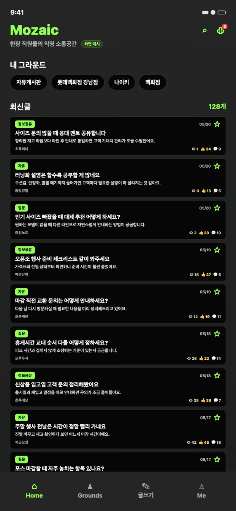
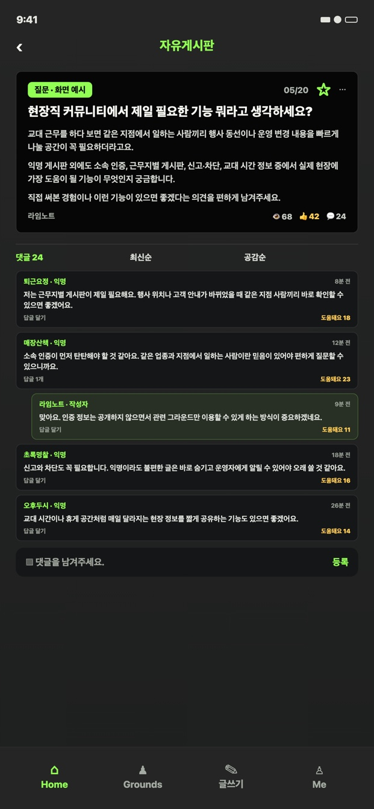
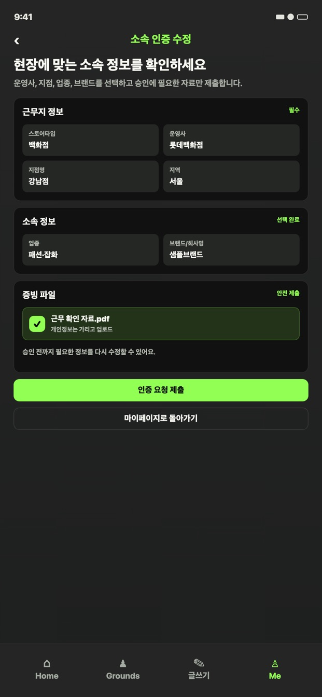
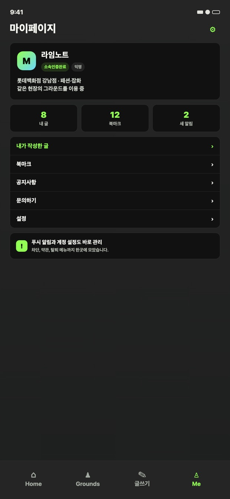

소속을 인증하고
내가 일하는 운영사·지점·브랜드·업종을 기준으로 필요한 공간에 연결됩니다.
백화점 · 쇼핑몰 현장 직원을 위한
소속을 인증하고, 같은 백화점과 쇼핑몰에서 일하는 동료들과 익명으로 경험과 정보를 나눠보세요.
스토어 공개 후 다운로드 링크가 연결됩니다.

현장 기반내 소속에 맞는 대화
공개 정보 최소화실명·연락처·얼굴 미노출
안전 기능신고·차단·비공개 문의
WHY MOZAIC
검색으로 흩어진 정보를 찾는 대신, 나와 비슷한 하루를 보내는 동료들에게 바로 물어보세요.
내가 일하는 운영사·지점·브랜드·업종을 기준으로 필요한 공간에 연결됩니다.
백화점, 지점, 브랜드처럼 나와 관련된 그라운드를 한 화면에서 둘러봅니다.
업무 팁, 현장 정보, 질문과 경험을 부담 없이 게시글과 댓글로 주고받습니다.
HOW IT WORKS
사용하는 기기에 맞는 스토어에서 Mozaic을 설치합니다.
내 현장 정보를 선택하고 인증 요청을 완료합니다.
같은 현장의 게시글을 읽고 익명으로 이야기를 나눕니다.
INSIDE THE APP
내 그라운드의 최신 이야기부터 글쓰기, 소속 인증, 마이페이지까지 자연스럽게 이어집니다.



PRIVACY & SAFETY
공개 화면에는 실명, 연락처, 얼굴이 표시되지 않습니다. 불편한 콘텐츠와 사용자는 즉시 신고하거나 차단할 수 있습니다.
대화에 필요하지 않은 개인 식별 정보는 공개 화면에 보여주지 않습니다.
불편하거나 부적절한 콘텐츠와 사용자를 직접 신고하고 차단할 수 있습니다.
운영자에게 남긴 문의와 답변은 작성자만 확인할 수 있습니다.
FAQ
백화점과 쇼핑몰을 비롯해 아울렛, 면세점, 로드숍, 카페, 호텔 등 다양한 현장 직원을 위한 커뮤니티입니다.
공개 화면에는 실명, 연락처, 얼굴이 표시되지 않습니다. 소속 정보는 관련 그라운드 이용 권한을 구분하는 데 사용됩니다.
앱 안에서 게시글과 댓글을 신고할 수 있고, 해당 사용자를 차단해 콘텐츠를 숨길 수 있습니다.
YOUR GROUND IS WAITING
휴대폰으로 스캔기기에 맞는 스토어를 안내해요